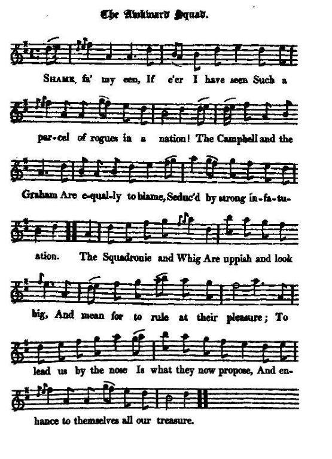

The Awkward Squad
La bande de salauds
List of the leading Whigs who promoted the Union
Liste des Whigs qui conduisirent le parti de l'Union
Tune - Mélodie"The Meal Mill O"
from Hogg's "Jacobite Reliques" part I, N° 39
Sequenced by Christian Souchon

|
For further particulars about the tune, see "Charlie's landing" Source "The Fiddler's Companion" (cf. Liens). |
Pour plus de détails concernant le chant, cf. "L'arrivée de Charlie" Source "The Fiddler's Companion" (cf. liens). |

|
THE AWKWARD SQUAD. [1] 1. Shame fa' my een, If e'er I have seen Such a parcel of rogues in a nation! The Campbell and the Graham Are equally to blame, Seduc'd by strong infatuation. The Squadronie [2] and Whig Are uppish and look big, And mean for to rule at their pleasure; To lead us by the nose Is what they now propose, And enhance to themselves all our treasure. 2. The Dalrymples come in play, Though they sold us all away, And basely betrayed this poor nation ; On justice lay no stress, For our country they oppress, Having no sort of commiseration. No nation ever had A set of men so bad, That feed on its vitals like vultures : Bargeny, and Glenco, And the Union, do show To their country and crown they are traitors. 3. Lord Annandale must rule, Though at best a very tool, Hath deceiv'd every man that did trust him; To promise he'll not stick, To break will be as quick; Give him money, ye cannot disgust him. It happen'd on a day, " Us cavaliers," he'd say, And drink all their healths in a brimmer; But now he's chang'd his note, And again has turn'd his coat, And acted the part of a limmer. 4. Little Rothes now may huff, And all the ladies cuff; Coully Black [3] must resolve to knock under; Belhaven hath of late Found his father was a cheat, And his speech on the Union a blunder; Haddington, that saint, May roar, blaspheme, and rant, He's a prop to the kirk in his station ; And Ormiston may hang The Tories all, and bang Every man that's against reformation. 5. Can any find a flaw, To Sir James Stuart's skill in law, Or doubt of his deep penetration ? His charming eloquence Is as obvious as his sense; His knowledge comes by generation. Though there's some pretend to say He is but a lump of clay, Yet these are malignants and Tories, Who to tell us are not shy, That he's much inclin'd to lie, And famous for coining of stories. 6. Mr Cockburn, with fresh airs, Most gloriously appears, Directing his poor fellow-creatures; And who would not admire A youth of so much fire, So much sense, and such beautiful features ? Lord Polworth need not grudge The confinement of a judge, But give way to his lusts and his passion, Burn his linens every day, And his creditors ne'er pay, And practise all the vices in fashion. 7. Mr Bailey's surly sense, And Roxburgh's eloquence, Must find out a design'd assassination; If their plots are not well laid, Mr Johnstoun will them aid, He's expert in that nice occupation. Though David Bailey's dead, Honest Kersland's in his stead, [4] His Grace can make use of such creatures; Can teach them how to steer, 'Gainst whom and where to swear, And prove those he hates to be traitors. 8. Lord Sutherland may roar, And drink as heretofore, For he's the bravo of the party; Was ready to command Jeanie Man's trusty band, In concert with the traitor M'Kertney. Had not Loudon got a flaw, And been lying on the straw, He'd been of great use in his station : Though he's much decay'd in grace, His son succeeds his place, A youth of great application. 9. In naming of this set, We by no means must forget That man of renown, Captain Monro ; Though he looks indeed asquint, His head's as hard as flint, And he well may be reckon'd a hero. Zealous Harry Cunninghame Hath acquir'd a lasting fame By the service he's done to the godly: A regiment of horse Hath been given away much worse Than to Mm who did serve them so boldly. 10. The Lord Ross's daily food Was on martyrs' flesh and blood, And he did disturb much devotion: Although he did design To o'erturn King Willie's reign. Yet he must not want due promotion. Like a saint sincere and true, He discover'd all he knew, And for more there was then no occasion. Since he made this godly turn, His breast with zeal doth burn, For the king and a pure reformation. 11. The Lady Lauderdale, And Forfar's mighty zeal, Brought their sons very soon into favour: With grace they did abound, The sweet of which they found, When they for their offspring did labour. There's Tweeddale and his club, Who have given many a rub To their honour, their prince, and this nation: Next to that heavy drone, Poor silly Skipness John, Have establish'd the best reputation. 12. In making of this list, Lord Bay should be first, A man most upright in spirit; He's sincere in all he says, A double part ne'er plays, His word he'll not break, you may swear it. Drummond, Warrender, and Smith, Have serv'd with all their pith, And claim some small consideration. Give Hyndford his dragoons, He'll chastise the Tory loons, And reform ev'ry part of the nation. 13. Did ever any prince His favours thus dispense On men of no merit nor candour ? Would any king confide In men that so deride All notions of conscience and honour ? Hath any been untold, How these our country sold, And would sell it again for more treasure ? Yet, alas ! these very men Are in favour now again, And do rule us and ride us at pleasure. Source: Jacobite Minstrelsy, published in Glasgow by R. Griffin & Cie and Robert Malcolm, printer in 1828. |
LA BANDE DE SALAUDS. [1] Les clans Campbell et Graham L'Escadron des Whigs [2] Les Dalrymple Lord Annandale Coolie Black Rothes [3] Bellhaven Haddington Ormiston Sir James Stuart. Mr Cockburn Lord Polworth Mr Bailey Roxburgh Johnstoun Kersland [4] Lord Sutherland Jeanie Man McKertney Loudon Captain Monro Harry Cunninghame Lord Ross Lady Lauderdale Forfar Tweddale John Skipness Lord Bay Drummond Warrender Smith Hyndforth |
|
[1] This song is chiefly valuable as comprising the names of all the leading whigs who strenuously promoted the Union, a measure to which, of course, the Jacobites were violently opposed. It details the "Parcel of Rogues" addressed by Burns in the eponymous song. [2] The Marquis of Tweeddale and his party were called the "squadrons volants", from their pretending to act by themselves, and turn the balance of the contending parties in Parliament. [3] The Earl of Rothes fought in the street with a caddie or porter called Black, because in derision of the whigs he wore a hat with white tracing. Rothes is said to have been killed in the affray. [4] David Bailey, and after his death, Kerr of Kersland, are said to have acted a double part in the politics of this period. They were employed by Queensberry for the Whigs, and by the leading Jacobites at the same time, and they are accused of having proved traitors to the latter by revealing all their secret proceedings to the Whig ministry. Notes from "Jacobite Minstrelsy" |
[1] Le principal intérêt de ce chant est qu'il donne la liste des chefs du parti Whig qui soutinrent à fond la création de l'Union, mesure à laquelle, comme on peut s'y attendre, les Jacobites étaient violemment opposés. Il détaille la liste de la "bande de gredins" dont parle Robert Burns. (Il sera traduit, peut-être, ultérieurement.) [2] Le Marquis de Tweeddale et son parti portaient le surnom d'"escadrons volants", parce qu'ils affectaient d'agir seuls pour faire pencher la balance entre les 2 parties en présence au sein du Parlement. [3] Le Comte de Rothes qui s'était battu dans une rue avec un porte-faix ou un garçon de courses nommé Black, parce que ce dernier, pour se moquer des Whigs, arborait un chapeau avec une inscription à la craie. On dit que Rothes fut tué pendant la bagarre. [4] David Bailey, puis, après sa mort, Kerr of Kerland jouèrent, dit-on, un double jeu dans les débats politiques de cette époque. Ils s'étaient mis au service de Queensberry et des Whigs, mais aussi des chefs Jacobites qu'ils furent accusés d'avoir trahis en dévoilant leurs agissements secrets aux ministres Whigs. Notes tirées de "Jacobite Minstrelsy". |